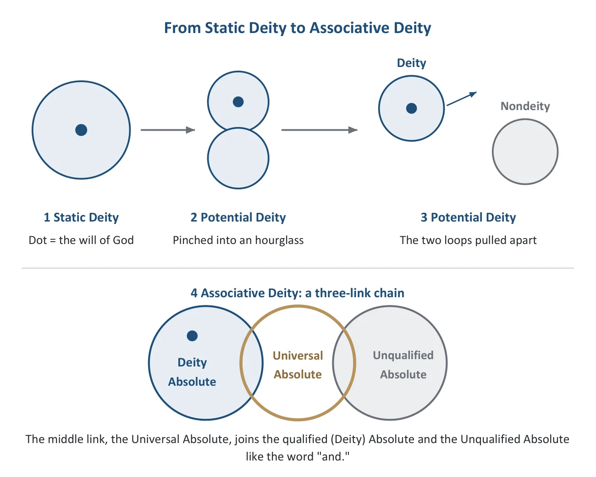

L’Âge Zéro
Original : Prologue dans l’éternité · Deuxième prologue : l’Âge Zéro (p. 6–13)
DANS CE CHAPITRE
Avant Havona, il n’y a pas de réalité au sens d’un fait, mais on peut tout de même former des concepts valides sur cette condition. En la comparant au nombre zéro, Sadler place un « Âge Zéro » avant le Premier Âge de l’univers et utilise des diagrammes pour retracer la manière dont la Déité y passe par les niveaux statique, potentiel et associatif. En chemin, les trois Absolus apparaissent, Dieu devient Père, et une thèse, une antithèse et une synthèse de la réalité potentielle s’accomplissent. Dans la réalité actuelle, cependant, la synthèse attendue cède la place à quelque chose que personne n’aurait pu prévoir.
1. Six âges de l’univers et ce qui les a précédés (orig., p. 6)
Pour bien étudier le maitre univers, il est utile de remonter aussi loin que possible, car les préparatifs en ont été faits au Paradis. Sadler ordonne le développement du maitre univers en six grandes divisions du temps, les six âges de l’univers. Nous vivons dans le deuxième. Le premier appartient à Havona, l’univers central. Cette création divine est le noyau éternel de la perfection, et le reste du maitre univers tourne lentement autour de lui tout en s’étendant peu à peu dans l’immensité de l’espace extérieur.
C’est le noyau éternel de la perfection autour duquel tournoie l’interminable procession des univers qui constituent la prodigieuse expérience évolutionnaire, l’aventure audacieuse…14:0.2
2. Faits et concepts valides (orig., p. 6)
L’analogie du zéro
L’éternité « se lève » avec l’éternel Havona déjà présent. Avant le « temps » de Havona, il ne peut donc y avoir de réalité en tant que fait. Même ainsi, Sadler soutient que nous pouvons avoir des concepts valides sur ce qui le précède. Un concept n’a pas besoin d’être un fait pour être utile et solide. Lorsque nous parlons, dans le langage du temps et de l’espace, de réalités qui précèdent le temps et l’espace, nous ne pouvons pas saisir des faits actuels, mais nous pouvons approcher des concepts relativement valides.
Sadler illustre la distinction par les nombres. Quand on compte, « un » est le premier nombre réel, mais derrière lui se tient le concept de « zéro ». Le zéro n’est pas quelque chose qui existe en tant que fait, et pourtant c’est clairement un concept valide, sans lequel les mathématiques ne fonctionneraient pas correctement. De même, si le Premier Âge de l’univers est le premier « âge de fait », alors derrière lui se tient le concept d’un âge antérieur à Havona. Sadler le nomme l’Âge Zéro. Le zéro d’une règle ne mesure rien par lui-même, mais il montre où commence le premier centimètre.
Le Livre d’Urantia n’emploie pas l’expression « Âge Zéro ». Il pose toutefois un état antérieur à l’apparition de l’Esprit Infini et de l’univers central et explique les origines de la réalité une étape après l’autre, et le texte lui-même déclare qu’il s’agit d’un mode d’explication adapté aux mentals finis.
C’est pourquoi il nous faut présenter beaucoup d’évènements simultanés de l’éternité comme étant des opérations séquentielles.0:3.20
3. Relations d’origine dans l’éternité (orig., p. 7)
Toute tentative de penser les « origines » dans l’éternité passée se heurte vite à des difficultés. Dieu est le Père du Fils Éternel, et pourtant le Fils est tout aussi « ancien » que Dieu. Sadler propose de mettre un instant de côté le mot « éternel » et de penser dans le langage plus commode du temps. Vues ainsi, les réalités éternelles (le Père, le Fils et l’Esprit, avec l’Ile du Paradis et l’univers central) se répartissent en trois relations d’origine.
| Étape | Réalités | Raison de les placer ici |
|---|---|---|
| Éternel | Esprit Infini ; Havona, l’univers central | Éternels, mais apparaissant alors que le Fils et le Paradis étaient déjà présents |
| Plus éternel | Fils Éternel ; Ile du Paradis | Déjà présents lorsque l’Esprit et Havona apparurent |
| Le plus éternel | Père Universel | Père du Fils et source du Paradis |
Sadler forge délibérément l’expression maladroite « plus éternel » (eternaler) pour montrer que, même au sein de l’éternité, on peut concevoir trois étapes. Il propose d’aller aussi loin vers l’intérieur que les concepts le permettent, puis de revenir vers l’extérieur une étape à la fois, vers Havona et la réalité de fait. Le Livre d’Urantia indique clairement que de telles séquences ne sont qu’une concession aux mentals liés au temps.
…En d’autres termes, il n’y a jamais eu d’époque où le JE SUIS n’était pas le Père du Fils et, avec ce dernier, le Père de l’Esprit.0:3.23
4. Explorer l’éternité passée (1) : la Déité statique (orig., p. 7–8)
Dieu avant la paternité
Si nous remontons aussi loin que la pensée le permet, nous nous retrouvons à essayer de nous représenter Dieu tel qu’il était avant de devenir le Père du Fils Éternel. Sadler appelle cela le concept d’un Dieu « pré-père ». C’est un concept valide plutôt qu’un fait. Qu’en était-il lorsque Dieu était seul, avant d’avoir fait le moindre plan de création ?
Au cœur de l’Âge Zéro, il y a l’immobilité. Il y a une stabilité absolue, et rien ne bouge. Dieu se suffit à lui-même, vit en lui-même et contient tout en lui-même. Dans le tableau de Sadler, tout est intérieur et rien n’est extérieur ; rien ne se trouve au-delà ; il n’y a qu’un éternel présent, sans passé derrière lui ni avenir devant lui. Dieu est, simplement. Le Livre d’Urantia mentionne ceci comme le premier niveau de la Déité.
1. Statique — Déité contenue en soi et existant en soi.0:1.4
Toujours vrai aujourd’hui
Sadler fait ici une remarque importante. La Déité statique n’est pas une condition théorique qui aurait existé il y a longtemps et aurait ensuite disparu. Elle est aussi vraie aujourd’hui qu’elle l’était dans les profondeurs de l’éternité passée, et elle le restera tout au long de l’éternité future. Dieu est statique et, en même temps, tout le reste aussi. Il n’a pas besoin de passer d’une activité à la suivante ; il fait toutes choses à la fois et toujours. C’est la clé de tout le chapitre. La Déité statique, potentielle et associative est présentée l’une après l’autre, mais l’ordre est conceptuel, non chronologique.
5. Explorer l’éternité passée (2) : la Déité potentielle (orig., p. 8–10)
Dieu forme un plan
Depuis les profondeurs de l’Âge Zéro, nous faisons un premier pas vers la réalité de fait. Nous considérons maintenant Dieu après qu’il a formé un plan. Il n’a encore rien fait, mais il a voulu faire quelque chose. Ce « quelque chose » devient possibilité, c’est-à-dire potentiel. Parce que Dieu a décidé d’exprimer sa volonté, la Déité est devenue une Déité se voulant elle-même. Des potentiels sont venus à l’existence, et la Déité est devenue Déité potentielle.
2. Potentiel — Déité se voulant elle-même et ayant son but en soi.0:1.5
Un cercle se divise en deux
Sadler montre cette étape par un diagramme. Imaginons un cercle, marqué en son centre d’un point, qui représente la Déité statique. Pinçons maintenant le cercle en son milieu pour lui donner la forme d’un sablier, de sorte que le point se trouve au milieu de l’une des boucles. Séparons entièrement les deux boucles : il y a alors deux cercles, l’un avec le point, l’autre sans.
Le cercle avec le point est la Déité. Il s’est séparé de l’autre cercle parce que Dieu a décidé qu’il en serait ainsi. Le point représente la volonté de Dieu. L’autre cercle n’a pas bougé du tout ; c’est la non-déité. Dépourvu de volonté, il peut répondre mais non initier.

L’Absolu Qualifié et l’Absolu Non Qualifié
Lorsque Dieu s’est retiré du cercle de la non-déité, le cercle qui s’est déplacé avec lui a été modifié. Sadler emploie ici le mot « qualifié » au sens de « limité ou modifié d’une certaine manière ». Ce que Dieu a fait au cercle avec le point, c’est de le limiter et de le modifier d’une certaine façon. Le cercle laissé en arrière était donc inchangé, immobile et non qualifié. Comme tout cela se passe au niveau absolu, Sadler appelle le cercle laissé en arrière l’Absolu Non Qualifié et nomme le cercle qui s’est séparé l’Absolu Qualifié, qui sera plus tard connu sous le nom d’Absolu de Déité.
Sadler nous invite à concevoir les deux Absolus comme des réservoirs sans limites. Ils contiennent tous les plans de Dieu pour l’avenir, et lorsque Dieu rend ces plans actuels, il y puise. Les plans concernant les choses, la matière physique et la matérialisation impersonnelle, il les tire de l’Absolu Non Qualifié ; les plans concernant l’esprit et les êtres personnels, de l’Absolu de Déité. Le Livre d’Urantia traite lui aussi ces deux Absolus comme les deux extrêmes de la réalité déifiée et de la réalité non déifiée.
6. L’Absolu Non Qualifié. Statique, réactif et en attente ; l’infinité cosmique non révélée du JE SUIS ; la totalité de la réalité non déifiée et la finalité de tout le potentiel non personnel.105:3.7
Sadler et le texte : un Absolu « qualifié » ou un Absolu « qui qualifie » ?
Sadler se représente l’Absolu de Déité comme un Absolu « qualifié », mis en mouvement par Dieu. Le Livre d’Urantia, en revanche, décrit plutôt l’Absolu de Déité comme celui qui qualifie. Il dit que l’Absolu de Déité « qualifie l’absolu et rend absolu le qualifié » [105:3.6]. Les deux présentations ne sont pas réellement en conflit. L’Absolu de Déité est le domaine que la volonté de Dieu a touché et délimité, et c’est précisément pour cette raison qu’il devient le pouvoir qui qualifie intentionnellement la réalité de non-déité. L’étiquette de Sadler est une commodité au service de son diagramme ; le nom officiel dans le texte est l’Absolu de Déité.
6. Explorer l’éternité passée (3) : la Déité associative (orig., p. 10–11)
Une chaine à trois maillons
Nous avançons d’un pas encore, vers la limite extrême de l’Âge Zéro. Le premier acte associatif que considère Sadler est l’association des deux Absolus. Comme tous deux sont issus de la même réalité statique originelle, ils restent reliés, et leur relation est tout à fait réelle. Quand un devient deux, il y a « l’un et l’autre ». Le mot « et » est lui-même une réalité. Comme cette connexion est universelle, on l’appelle l’Absolu Universel. Tel le maillon central d’une chaine à trois maillons, l’Absolu Universel relie les deux autres. Dessinez trois anneaux en ligne, l’anneau central empiétant légèrement sur chacun de ses voisins, et l’image est complète.
3. Associatif — Déité personnalisée en soi et divinement fraternelle.0:1.6
Le Livre d’Urantia enseigne que l’Absolu Universel résout la tension produite lorsque la Déité s’est séparée de l’infinité non qualifiée.
Cette tension différentielle d’infinité est résolue par l’Absolu Universel qui fonctionne pour unifier et coordonner l’infinité dynamique de la Déité Totale et l’infinité statique de l’Absolu Non Qualifié.0:3.21
Du pré-père au Père
Une autre relation associative dans l’éternité est celle dans laquelle Dieu lui-même entre, la relation qui fait de lui le Père Universel. Jusqu’ici, nous avons pensé Dieu comme pré-père. Vu ainsi, Dieu est la personnalité absolue et, à ce titre, il est enfermé dans toutes les limitations qu’entraine le fait d’être absolu. Puisqu’il remplit complètement toute la Déité, l’Absolu de Déité, il n’y a pas de Déité en dehors de lui ni de « place » où se mouvoir.
Alors Dieu fait de la place. De même qu’il s’était auparavant séparé de la réalité totale en séparant l’Absolu Qualifié de l’Absolu Non Qualifié, il se sépare maintenant de la personnalité absolue. Sadler résume trois conséquences. Premièrement, en donnant à la personnalité absolue une existence distincte de la sienne, Dieu devient la cause et la source de cette existence. Deuxièmement, s’il est la source d’une personne, il est le père de cette personne ; et celui qui peut être le père de la personne absolue peut être le père de toute personne, et devenir ainsi le Père Universel. Troisièmement, la personnalité absolue devient le Fils originel de Dieu. Comme tout cela se passe dans l’éternité, nous l’appelons le Fils Éternel.
Par la technique de trinitisation, le Père se dépouille de la personnalité d’esprit non qualifiée qui est le Fils, mais, ce faisant, il se constitue le Père de ce même Fils…10:2.1
C’est le commencement de la fraternité divine des personnes éternelles de la Déité, une communion qui devient complète lorsque l’Esprit Infini, la troisième personne, apparait.
7. Thèse, antithèse et synthèse existentielles (orig., p. 11–13)
Quatre mots
Sadler commence par définir quatre mots inhabituels du titre de cette section. Existentiel est un terme qui a un sens particulier dans le Livre d’Urantia : il désigne ce qui est éternel, sans commencement ni fin. Ce qui est existentiel n’a jamais cessé d’exister et possède une connaissance complète antérieure à toute expérience. Dieu est existentiel. Son contraire est expérientiel, qui décrit les êtres et les choses qui ont une origine, ainsi que tout ce qui est capable de croitre par l’expérience. Les êtres humains sont entièrement expérientiels dans leur croissance.
Les trois autres mots, thèse, antithèse et synthèse, sont empruntés au philosophe Hegel. Une thèse est une présentation ; une antithèse en diffère, contraste avec elle et la stimule. Sadler souligne qu’une antithèse n’a pas besoin d’être hostile à la thèse. Une synthèse réunit les deux en un tout harmonieux dans lequel chacune est agrandie. Ce schéma en trois temps revient de nombreuses fois dans l’étude du maitre univers.
Thèse, antithèse et synthèse dans la réalité potentielle
Nous avons déjà vu ce processus se dérouler. Lorsque Dieu a fait sortir l’Absolu Qualifié de l’infinité totale, ce mouvement a été la première expression de sa volonté d’agir, la première thèse. Ce qui est resté en arrière, ni déplacé ni qualifié, est devenu l’antithèse de ce que Dieu avait voulu. L’Absolu de Déité est la première thèse potentielle ; l’Absolu Non Qualifié est la première antithèse potentielle. Lorsque l’Absolu Universel relie les deux, la première synthèse est accomplie.
Thèse et antithèse dans la réalité actuelle
Revenons au « moment » où Dieu se sépare de la personnalité absolue et devient son Père. Sadler estime qu’à ce moment même Dieu a aussi établi la machine absolue, l’Ile du Paradis, pour des raisons assez semblables à celles pour lesquelles nous construisons des machines : accomplir un travail relativement mécanique et répétitif. Le Paradis sert de centre et de régulateur physique pour les univers matériels, tandis que le Fils Éternel sert de centre et de régulateur spirituel pour la création d’esprit. Personnel et spirituel, le Fils se tient comme la thèse de la Déité actuelle ; le Paradis, qui n’est ni l’un ni l’autre, se dresse en face de lui comme une antithèse actuelle mais qui n’est pas Déité.
Lorsque la réalité est différenciée en personnel et non-personnel (Fils Éternel et Paradis), il n’est guère juste d’appeler « Déité » ce qui est non-personnel, à moins que ce non-personnel soit qualifié d’une certaine manière.11:9.4
La situation est très proche de celle des Absolus. La seule différence est que les Absolus sont potentiels, alors que le Fils et le Paradis sont actuels. Il serait donc raisonnable de s’attendre à ce que Dieu fasse la synthèse du Fils et du Paradis, comme il avait fait la synthèse des deux Absolus dans l’Absolu Universel. Mais Dieu n’est pas une machine. Quelque chose d’inattendu s’est produit.
Une thèse sur une thèse
Aucune synthèse du Fils et du Paradis, de l’actualité spirituelle et de l’actualité non spirituelle, n’a lieu. À la place, en commençant par lui-même et par le Fils, il unit toute la réalité de Déité actuelle. Le Père et le Fils, unis en tant que Père-Fils, donnent naissance à un troisième être qui n’exprime pas l’un ou l’autre mais les deux, éternellement et parfaitement. Ainsi apparait l’Esprit Infini, le Dieu d’Action.
Ce même Acteur Conjoint, ce Dieu d’Action, est l’expression parfaite des plans et desseins illimités du Père-Fils, tout en agissant lui-même comme source du mental et dispensateur de l’intellect aux créatures d’un immense cosmos.105:3.5
Sadler décrit cela comme une thèse posée sur une thèse. Si le Fils est la thèse de la Déité actuelle, le Père prend la place de la « thèse antérieure » de la Déité, tandis que l’Esprit émerge comme la « thèse conjointe » de la Déité actuelle. Unis en tant que Trinité, les trois expriment ensemble une seule thèse indivise de la Déité, à la fois existentielle et actuelle.

Une asymétrie d’artiste
Si Dieu avait fait la synthèse du Fils, qui est esprit, et du Paradis, qui ne l’est pas, il en serait résulté un tableau équilibré. Les actuels (Fils Éternel, Paradis, Esprit Infini) auraient formé un ensemble de trois correspondant exactement à celui des potentiels (Absolu Non Qualifié, Absolu Universel, Absolu de Déité). Mais personne n’aurait pu prévoir que Dieu s’unirait au Fils à la fois dans l’Esprit et dans la Trinité.
Sadler appelle ce résultat une « asymétrie artistique ». Pensons à la différence entre une marque placée exactement au milieu d’un rectangle et une autre placée un peu sur le côté. Une disposition légèrement déséquilibrée parait plus vivante qu’une symétrie mathématique et mécanique. Dieu est un artiste avant d’être un ingénieur.
Lorsque Dieu unifie une partie de la réalité actuelle, seule la Déité entre dans l’union ; le Paradis en est exclu. Sadler signale que ce point deviendra très important par la suite. Le Paradis, omis de la synthèse existentielle, demeure une tâche pour tous les associés et subordonnés expérientiels de Dieu qui apparaissent ensuite. Cette tâche conduit à la question de savoir pourquoi la synthèse pouvoir-personnalité a lieu. Nous sommes maintenant arrivés à l’« aurore » de l’éternité, où se termine l’Âge Zéro.
Points clés
- Avant Havona, il n’y a pas de réalité en tant que fait, mais on peut encore former des concepts valides ; par analogie avec le nombre zéro, Sadler appelle cette période l’Âge Zéro.
- Reformulées dans le langage du temps, les relations d’origine dans l’éternité forment trois étapes, éternel, plus éternel et le plus éternel ; c’est un ordre de concepts, non de temps.
- La Déité statique est le Dieu qui se suffit à lui-même, et elle reste vraie aujourd’hui.
- Dans la Déité potentielle, le cercle se divise en Absolu de Déité et Absolu Non Qualifié ; dans la Déité associative, l’Absolu Universel relie les deux.
- En se séparant de la personnalité absolue, Dieu devient le Père du Fils Éternel et ainsi le Père Universel.
- Dans la réalité potentielle, thèse, antithèse et synthèse s’accomplissent ; dans la réalité actuelle, le Fils et le Paradis ne font pas l’objet d’une synthèse, et le Père et le Fils sont unis à la place dans l’Esprit Infini.
- Le Paradis, laissé en dehors de la synthèse existentielle, devient une tâche ultérieure pour les êtres expérientiels : le problème de la synthèse pouvoir-personnalité.